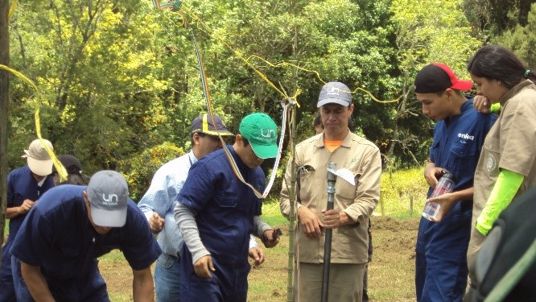
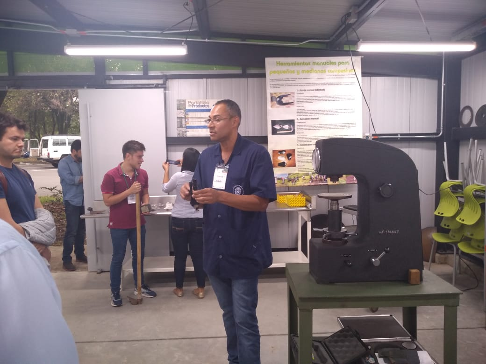

Articulación institucional
La Dirección de Laboratorios
Una oficina asesora que orienta y articula el sistema de laboratorios de la Sede Medellín.

Funciones y normativa
Conoce el marco institucional y las funciones publicadas.
Explorar →Redes y capacidades compartidas
Explora servicios de metrología y su información de contacto.
Explorar →Conocimiento en acción
Proyectos e impacto

Piloto documentado · 2022–2024
Taller de mantenimiento interno de equipos
El proyecto publicado documenta acciones de mantenimiento y formación de estudiantes. Consulta su período, resultados y contexto en la fuente.
Leer el proyecto publicado →Archivo · Memoria institucional
Memoria institucional
Las memorias de Experimenta conservan el valor del evento de 2014 y se presentan como archivo, separadas de los recursos operativos vigentes.
Consultar memorias de Experimenta 2014 →